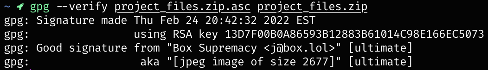

gpg and my authenticity
what the hell does this mean????
what is GPG?
GPG stands for GNU Privacy Guard. a GPG signature is a digital signature that can be used to verify the authenticity of a file, which is signed with my GPG key. i will always use my GPG key to sign files that i send to you. if you do not receive a signature for a file i send as a SEPARATE FILE with a link to my public GPG key, then you shouldn't trust the file.
under most circumstances, if you know the person who is sending you the file or files, then you should be fine. if you want to ever make sure that you are 100% certain that the file comes from me, follow the steps outlined below on how to do so.
if any of this doesn't make sense, don't worry about it. this is just for the sake of security.
how to get my GPG key
my GPG key is always available on either the Ubuntu keyserver or through this website. i'll always keep this key up-to-date with the key i use when signing files.
my public GPG key is 0x014C98E166EC5073.
click the highlighted text to view and optionally save my public key.
if you're here to verify the integrity of a file i sent you, keep reading. if not, feel free to just import the key into your keyring 😉
verifying files with GPG signatures
PRE) install gpg on your machine.
self-explanatory. it's available for windows, macOS, and linux. if you're on a linux distro, GPG should either be installed on your machine by default or can be installed with your package manager. if you don't know how to do that, then look it up yourself.
I) download the public key.
it's linked above in the blue text, click the link and save the file.
II) import the key into your keyring.
open up your terminal or command prompt, and navigate to the directory the .asc file is in. if you can't do that, look up how to do it for your system. from there, run the following:
gpg --import box-key.asc
III) verify the signature of a file.
this time, navigate to the folder both the file and the signature file are in, and run this command:
gpg --verify [signature file] [file to verify]if you were verifying a file called
project_files.zip, then the command would look like this:
gpg --verify project_files.zip.asc project_files.zip
IV) review the output of the command.
if the output looks like the first image below, then the file is valid and you're good to go.
if the signature works, you can safely remove the signature file, and can start using the main file that was sent.